Welcome to Become a Disease Detective ! 🔍
Organised by
R Ladies+ Melbourne
Acknowledgement of Country
We are…
Kirsty, Dionne and Kathleen and we are from
R Ladies+ Melbourne.
We are here to teach you how to code in R!
What is coding and what is R ?
Coding is writing instructions that a machine or computer can understand to perform a task.

R is coding language used in statistics, data science and many other disciplines. It is also very powerful tool for visualising data.
Why should you learn R?
⚖️ R is free, open source and everyone can access
🥳 It can do so many things
📚 Lots of resources to learn and perform tasks, with a very large user community
🧑🎓 You can get a super cool job ! It’s a fantastic skill that is highly sought after in the work force
What will you learn today?
🗺️ What is an infectious disease, what is an outbreak and who are disease detectives?
🔍 How can R be used to investigate outbreaks?
Then YOU! are going to join the Global Outbreak Investigation Unit and solve an outbreak!
What are infectious diseases?
🦠 Infectious diseases are caused by certain microorganisms, such as bacteria, viruses, parasites or fungi, and will make people (or animals) sick when they are exposed to these microorganisms.
💭 Most microorganisms don’t make us sick, but some do, and these are known as pathogens.
🤧 There are lots of different ways that you might get an infectious disease. Some ways include breathing respiratory droplets, eating contaminated food or water, insect bites and many many more !
When do infectious diseases cause outbreaks?
📚The World Health Organisation definition of an outbreak:
💡 “occurrence of disease in excess of normal”
This might be because of a new pathogen, bringing pathogens to new areas, a mutating pathogen.
Many infectious diseases now have vaccines that mean outbreaks to these pathogens occur much less frequently (for example: measles, chicken pox, influenza etc.)
Let’s go through some examples of infectious diseases that cause outbreaks!
What is COVID-19?
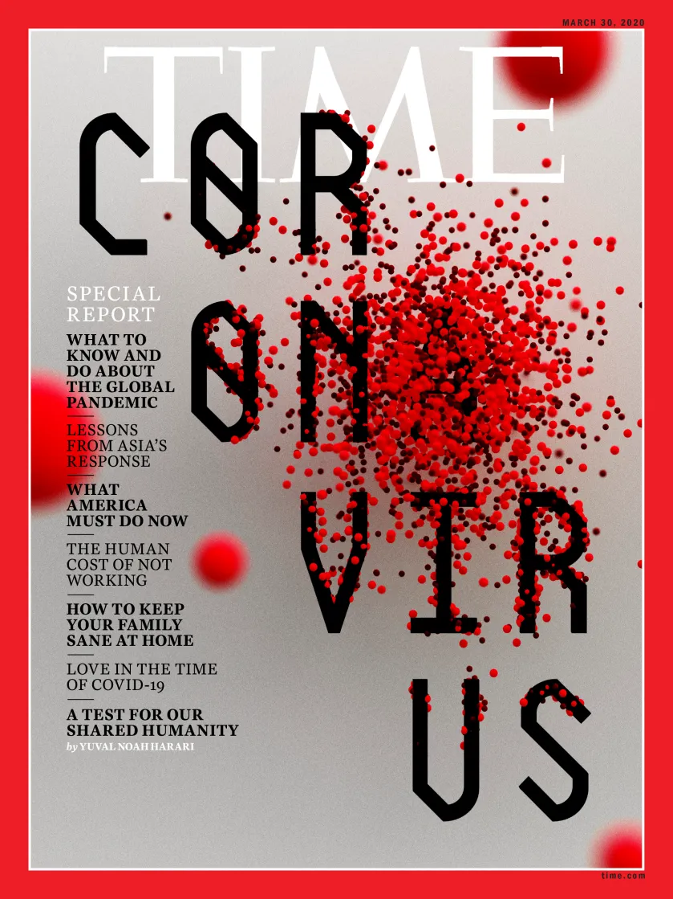
COVID-19 is caused by a virus known as SARS-CoV2. It caused a global pandemic.
A pandemic is defined as an infectious disease affecting multiple parts of the world simultaneously, i.e. multiple countries are experiencing an epidemic.
There are now several vaccines that have helped to reduce the severity of this infection.
What is RSV?
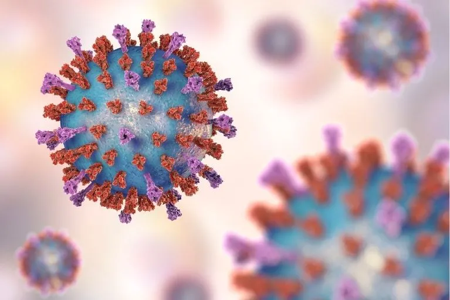
Respiratory syncytial virus (RSV) infects the respiratory tract.
Common symptoms can include runny nose, sneezing, cough, sore throat and fever. More severe respiratory illness can occur.
It spreads mainly through respiratory droplets/secretions and close contact.
What is cryptosporidiosis?
Cryptosporidiosis is gastroenteritis caused by the parasite Cryptosporidium.
Typical symptoms include watery diarrhoea, abdominal cramps, nausea/vomiting, fatigue and sometimes fever.
Infection can occur after swallowing contaminated recreational water.
What is Toxoplasmosis?
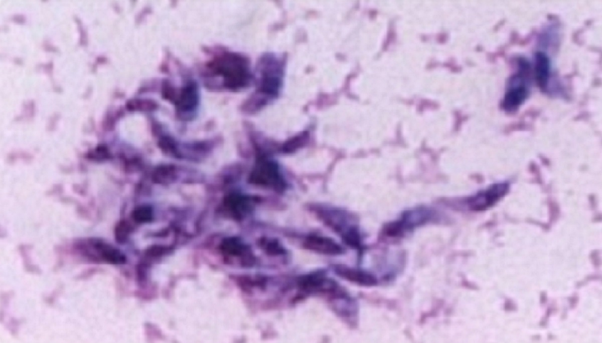
Toxoplasmosis is an infection caused by the parasite Toxoplasma gondii.
The parasite occurs worldwide and can last for long periods of time in humans (and other animals).
In fact, the parasite is endemic in Melbourne: there is an ongoing transmission.
It spreads through contaminated soil, sand, unwashed produce, undercooked meat, or unpasteurised milk.
Who studies outbreaks
Public health departments in the government
- How to improve the health of everyone
Academic research at Research Institutes and Universities
- Make new discoveries, such as developing new drugs or vaccines
Doctors and health staff
- Keep their patients safe
And many others too !
An epidemiologist is someone who studies how…
“to keep the public informed on different public health issues and offer solutions to keep communities safe. They perform studies on outbreaks, their causes, transmission and effect on the public, collating that information into accessible data and health recommendations.”
Source: What is epidemiology and what does an epidemiologist do?
WARNING: EMERGENCY ALERT!!!
Incoming message: Chief Epidemiologist
Several local hospitals have reported an unusual increase in sick students from the same school.
Students from two classrooms have presented with a range of symptoms. The number of cases is growing.
School activities include shared classes, lunch, art, hockey and swimming practice.
I need you to investigate what is causing this problem and how can we make the situation better?
Your cohort
95 students are part of the investigation.
Some are sick. Some are well.
Your first task is to use the hospital records to find out how many cases there are.
Why include students who are well?
People who do NOT become sick are important too.
They help us ask:
Was an exposure really associated with illness?
Did everyone who had contact become sick?
Are there different groups within the outbreak?
HOSPITAL UPDATE!!!
Incoming message: Chief Epidemiologist
Patient records have arrived from several hospitals.
They were assembled quickly by different staff, so some values are inconsistent.
I need you to load, inspect and clean the data.
First, open the patient file
Take a look.
| patient_id | first_name | class | age | sex | temperature_c | hours_to_symptoms | hospitalised | case_status | fever | cough | sore_throat | headache | muscle_aches | vomiting | diarrhoea | loss_of_smell | bleeding | confusion |
|---|---|---|---|---|---|---|---|---|---|---|---|---|---|---|---|---|---|---|
| P01 | Alex | 9A | 16 | female | 37.3 | 72.0 | YES | SICK | yes | Y | No | YES | yes | N | No | NO | no | N |
| P02 | Amelia | 9A | 13 | F | 37.8 | 121.0 | yes | sick | Y | Yes | NO | yes | N | No | NO | no | N | No |
| P03 | Ari | 9A | 15 | male | 37.5 | 191.3 | N | yes | No | YES | yes | Y | Yes | YES | no | N | No | NO |
| P04 | Bailey | 9A | 13 | Female | 38.3 | 109.7 | No | Sick | YES | yes | Y | Yes | YES | no | N | No | NO | no |
| P05 | Charlie | 9A | 14 | male | 37.7 | 124.9 | YES | SICK | yes | Y | Yes | NO | no | N | No | NO | no | N |
| P06 | Chloe | 9A | 13 | Male | 37.4 | 180.7 | yes | sick | Y | Yes | NO | no | N | No | NO | no | N | No |
What information do we have?
[1] "patient_id" "first_name" "class"
[4] "age" "sex" "temperature_c"
[7] "hours_to_symptoms" "hospitalised" "case_status"
[10] "fever" "cough" "sore_throat"
[13] "headache" "muscle_aches" "vomiting"
[16] "diarrhoea" "loss_of_smell" "bleeding"
[19] "confusion" ❓Can you find patients_raw in the environment pane?
The records are messy !
The hospital entered the records very quickly.
For example:
Yes, YES, yes and Y
all mean the same thing.
Computers need us to be consistent. If "Yes" and "YES" are written differently, R thinks they are different answers.
We can fix it with a function
Instead of fixing every value ourselves, we can use a pre-written function.
How many students are sick?
| case_status | students |
|---|---|
| Sick | 71 |
| Well | 24 |
What do the hospital records show?
After cleaning:
95 students in the cohort
71 sick
24 well
51 students had a hospital visit recorded
But do all 71 sick students have the same illness?
Incoming message: Chief Epidemiologist
We need a rapid symptom summary.
Investigate: the common symptoms, temperature, how quickly symptoms appeared and whether cases all look alike.
What symptoms are most common?
| symptom | n |
|---|---|
| cough | 48 |
| sore_throat | 36 |
| fever | 34 |
| muscle_aches | 27 |
| headache | 21 |
| diarrhoea | 18 |
| vomiting | 14 |
| loss_of_smell | 3 |
Tables are useful, but a graph is easier to read !
How to ask ggplot to plot our symptoms
aes refers to the aesthetics - what goes on each axis.
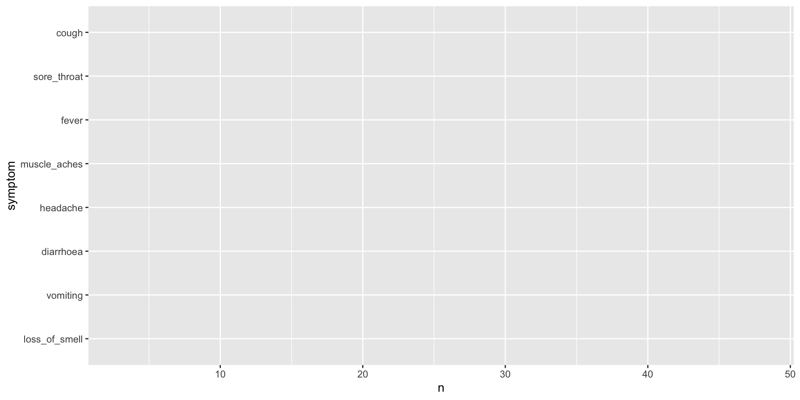
Add the bars with geom_col()
We use the + sign to add it to our ggplot command.
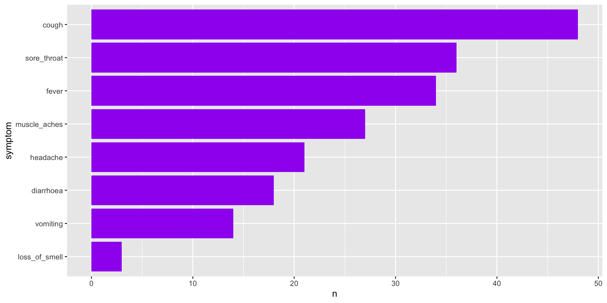
Give it a title and labels
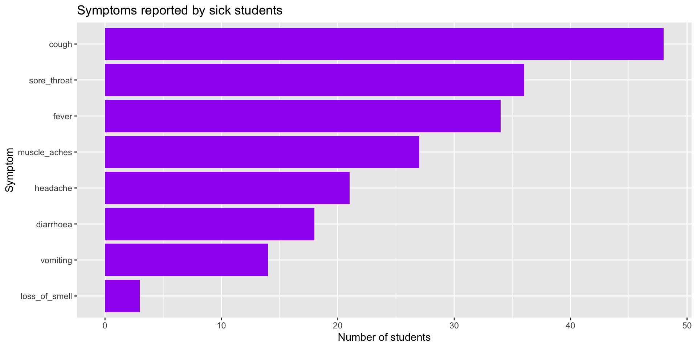
Your turn ! Change "purple" to another colour, or change the words inside title =, x = and y =, and run the code again.
Do sick students have higher temperatures?
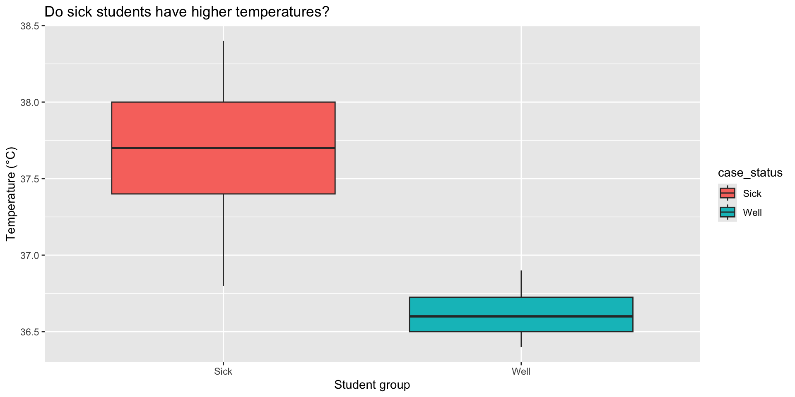
Your turn ! Inside aes(), change fill = case_status to colour = case_status. What changes?
How quickly did students become sick?
| sick_students | typical_temperature | typical_hours_to_symptoms |
|---|---|---|
| 71 | 37.7 | 116 |
The time between being exposed and becoming sick can be an important clue.
Two symptom patterns begin to appear
One large group is dominated by cough, sore throat and low-grade fever.
A smaller group is dominated by diarrhoea and vomiting.
Could one disease explain both patterns?
Infectious diseases: different organisms, different routes
- Infectious diseases are caused by viruses, bacteria, fungi and parasites.
- Transmission routes determine outbreak patterns.
Respiratory transmission:
- Spread via coughing, sneezing, talking or close contact.
- Creates infection chains through classrooms, households, and social settings.
Water-associated transmission:
- Intestinal parasites spread when infectious stages contaminate water/surfaces and are ingested.
- A shared source infects multiple people without person-to-person transmission.
NEW EVIDENCE: Where were the students?
Incoming message: Chief Epidemiologist
The school has provided the location and activity information.
Students spent time in classrooms, lunch areas, art class, hockey training and swimming practice.
I need you to combine location data with the patient records.
A second file has arrived
Which locations have the most illness?
| location | students | sick | attack_rate |
|---|---|---|---|
| Before-school swimming practice | 15 | 15 | 1.0000000 |
| Lunch area | 15 | 15 | 1.0000000 |
| Art class | 10 | 10 | 1.0000000 |
| International airport / return flight | 1 | 1 | 1.0000000 |
| Classroom 9A | 31 | 19 | 0.6129032 |
| Hockey training | 20 | 11 | 0.5500000 |
| Classroom 9B | 12 | 0 | 0.0000000 |
| Lunch courtyard | 24 | 0 | 0.0000000 |
| Swimming practice - did not enter pool | 15 | 0 | 0.0000000 |
The attack rate tells us what fraction of students at each location became sick.
Let’s plot the attack rates
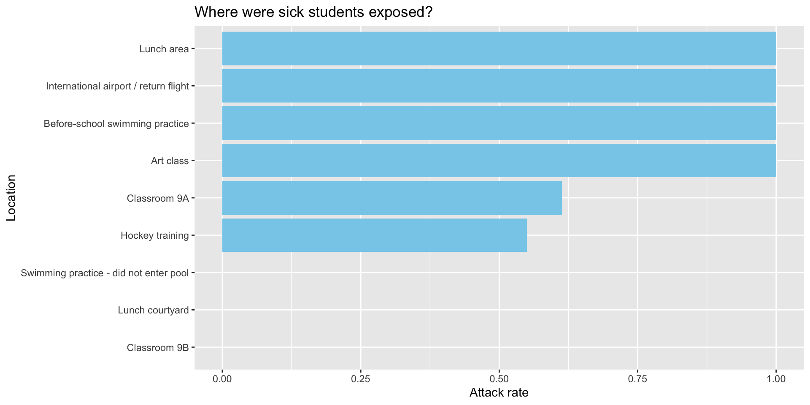
Your turn ! Change "skyblue" to another colour, then try changing the title.
What stands out?
Look for patterns rather than one perfect clue.
Questions:
Are respiratory cases linked through school activities?
Is there a location shared by the gastro cases?
Are some students at that location sick with a different symptom pattern?
Open the disease clue sheet
| disease | fever | cough | vomiting | diarrhoea | confusion_or_bleeding | typical_onset | common_exposure |
|---|---|---|---|---|---|---|---|
| RSV (Respiratory syncytial virus) | Low / possible | Very common | Uncommon | Rare | Rare | 2–8 days | Close respiratory contact; classrooms, lunch, activities |
| Human metapneumovirus (HMPV) | Possible | Common | Possible | Rare | Rare | 3–6 days | Respiratory spread |
| Influenza A | High | Common | Sometimes | Uncommon | Rare | 1–4 days | Respiratory spread |
| COVID-19 | Possible | Common | Sometimes | Possible | Rare | 2–5 days | Respiratory spread |
| Rhinovirus | Usually low | Common | Rare | Rare | Rare | 1–3 days | Respiratory spread |
| Cryptosporidiosis | Possible | Rare | Common | Very common | Rare | 1–12 days; average ~7 | Contaminated swimming pool water |
| Toxoplasmosis | Possible | Rare | Rare | Rare | Rare | Variable | Food, soil or cat faeces |
| Eimeriosis | Variable | Rare | Possible | Possible | Rare | Variable | Primarily animal-associated parasite |
| Malaria (Plasmodium spp.) | Common | Rare | Possible | Possible | Possible | Usually 7+ days | Mosquito exposure |
Open the disease clue sheet
Before we see the laboratory results, decide:
- Which diseases fit the cough and sore throat group?
- Which diseases fit the diarrhoea and vomiting group?
- What evidence supports your answers?
BREAKING NEWS: sequencing results
Incoming message: Chief Epidemiologist
The reference laboratory has sequenced selected patient samples.
You will compare the simulated sequences with reference organisms using a tree.
Do all patient samples belong to the same cluster?
How to read the tree
A phylogenetic tree groups sequences by similarity.
💡 Tips:
- tips that join closely are more similar in this teaching dataset
- look for patient samples clustering near a named reference
- branch position matters more than left-to-right order
Respiratory references in our tree
RSV - respiratory syncytial virus; a contagious respiratory virus that commonly causes cold-like illness and can cause more severe lower-respiratory disease.
HMPV - human metapneumovirus; another respiratory virus that can produce RSV-like illness.
Influenza - the virus responsible for seasonal flu.
SARS-CoV-2 - the virus that causes COVID-19.
Rhinovirus - a very common cause of the common cold.
Parasite references in our tree
Cryptosporidium - a microscopic intestinal parasite that causes cryptosporidiosis, usually with watery diarrhoea and gastrointestinal symptoms; recreational water is a recognised source.
Toxoplasma gondii - a protozoan parasite that causes toxoplasmosis.
Eimeria - a group of protozoan parasites best known for intestinal disease in animals.
Plasmodium spp. - protozoan parasites that cause malaria and are transmitted by Anopheles mosquitoes.
Let’s draw the tree
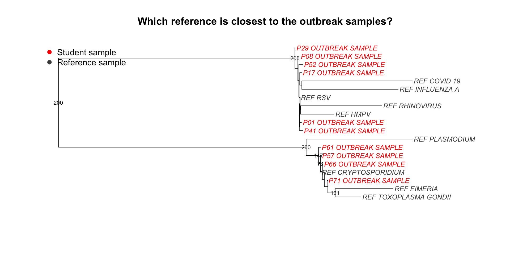
- Which reference is closest to most of the student samples?
- Do all of the student samples belong to the same group?
The tree reveals two groups
Patient sequences do not form one cluster.
One set clusters with RSV.
Another set clusters with Cryptosporidium.
We may be investigating TWO outbreaks at the same time.
CONTACT TRACING UPDATE
Incoming message: Chief Epidemiologist
Interviewers have provided contact information!!
Now we ask:
- Can we see person-to-person spread?
- Who is connected to the first recognised case?
- Are all sick students connected in the same way?
Who had contact with whom?
Let’s draw the network
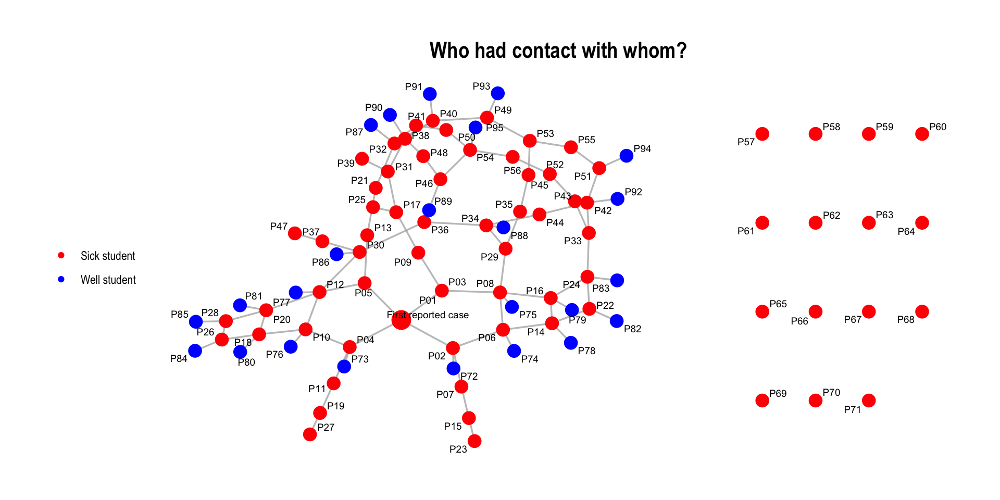
- Are most sick students connected?
- Why might some connected students still be well?
- Does a connection prove that infection occurred?
The RSV network
P01 recently returned from holiday via an international airport and is the likely introduction in our fictional scenario.
From P01, the contact pattern branches through: classroom → classmates → lunch/art → second classroom → hockey.
Some connected students remain well.
The swimming-pool cases
The gastro cases appear separately rather than forming a person-to-person chain.
Their important connection is not an edge on the contact network - it is the shared swimming-pool exposure.
Some students around the swimming group have RSV because they are connected back into the school respiratory network.
FINAL BRIEF
FINAL BRIEF
Your team must report:
- One outbreak or more than one?
- Most likely diagnosis for each group
- Three pieces of evidence
- Likely exposure/transmission route
- One limitation
- One public-health action for each outbreak
Case solved
Case solved
OUTBREAK 1: RSV
- 56 sick students
- Likely introduction: P01 after holiday/airport travel
- Pattern: person-to-person respiratory spread through school contacts
OUTBREAK 2: Cryptosporidiosis
- 15 sick students
- Pattern: common swimming-pool exposure
24 students remained well.
What would public health officers do next?
For a respiratory outbreak:
- identify cases and advise on staying home while unwell
- reinforce cough/hand hygiene and ventilation
- monitor for additional cases
For suspected pool-associated Crypto:
- confirm cases and investigate the aquatic facility
- advise people with diarrhoea not to swim
- work with environmental health/pool operators on control measures
Real life: RSV in Australia, 2026
The workshop’s RSV storyline was inspired by a July 2026 newsGP report.
During the first half of 2026, RSV was the most notified of RSV, influenza and COVID-19 nationally: 83,678 RSV notifications, compared with 51,655 COVID-19 and 49,785 influenza notifications.
RSV accounted for 45% of notifications across those three respiratory viruses in that period.
Real life: Crypto and swimming pools
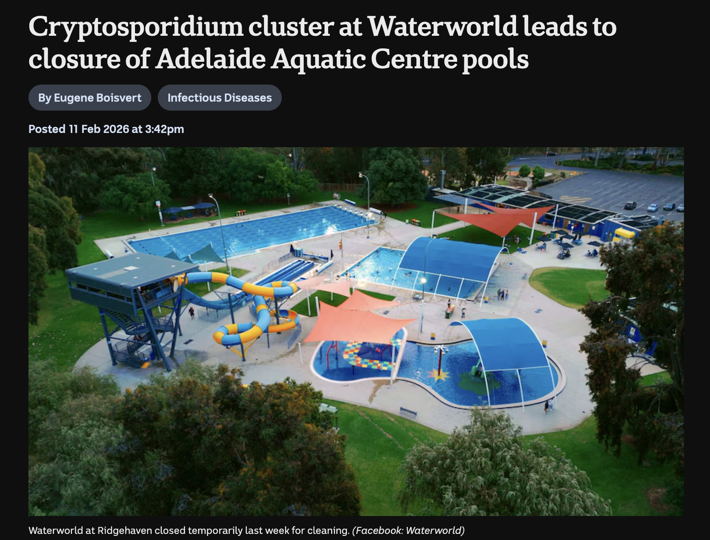
ABC News, 11 February 2026
Pool-associated cryptosporidiosis is a real public-health problem.
Victorian health guidance recognises public pools and recreational water as outbreak sources, and Crypto can survive normal pool chlorine levels.
In February 2026, an Adelaide aquatic-centre cluster involved eight cases linked to Waterworld, with pools temporarily closed for decontamination.
Why rapid outbreak response matters
At the beginning, the team had messy hospital records and an unexplained cluster.
By combining epidemiology, coding, laboratory evidence and contact tracing, you separated two outbreaks with different transmission routes.
That is exactly why outbreak teams use multiple sources of evidence.
Today we have learnt…
🦠 What are pathogens and what are outbreaks
🌎 Who are epidemiologists
🔢 What is R
📊 How to make plots with ggplot
📈 How to organise and arrange complex data
🤠 What’s something that you’ve learnt today?
Do you want to learn more?
And thank you to…
It Takes a Spark !
and to all of you for helping solve the outbreak !
R-Ladies+ Melbourne | rladies.org